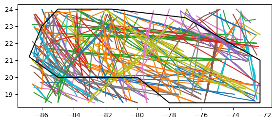

Code
from src.datasources import ibtracs, zma
import pandas as pd
import geopandas as gpd
from shapely.geometry import LineString
from matplotlib import pyplot as pltIBTrACS (Knapp et al. 2010) is the global archive of historical storm tracks. We load the track points within the ZMA’s bounds from the team database and plot them as a check.
from src.datasources import ibtracs, zma
import pandas as pd
import geopandas as gpd
from shapely.geometry import LineString
from matplotlib import pyplot as pltgdf_zma = zma.load_zma()total_bounds = gdf_zma.total_boundsdf_all = ibtracs.load_ibtracs_in_bounds(*total_bounds)df_all| point_id | sid | valid_time | latitude | longitude | wind_speed | gust_speed | pressure | max_wind_radius | last_closed_isobar_radius | last_closed_isobar_pressure | basin | nature | provider | quadrant_radius_34 | quadrant_radius_50 | quadrant_radius_64 | created_at | |
|---|---|---|---|---|---|---|---|---|---|---|---|---|---|---|---|---|---|---|
| 0 | fdc4f638-eb3d-4044-912c-a80e2921f92f | 2023152N26274 | 2023-06-03 18:00:00.000039 | 23.900000 | -85.000000 | 25.0 | NaN | 1001.0 | 40.0 | 140.0 | 1005.0 | NA | DS | nhc_working_bt | [nan, nan, nan, nan] | [nan, nan, nan, nan] | [nan, nan, nan, nan] | 2025-05-13 21:22:52.749544 |
| 1 | 8cd22c3c-b67f-4c58-947e-1375b54f0d46 | 2023152N26274 | 2023-06-03 21:00:00.000039 | 23.677523 | -84.609840 | 25.0 | NaN | 1001.0 | 40.0 | 140.0 | 1005.0 | NA | DS | None | [nan, nan, nan, nan] | [nan, nan, nan, nan] | [nan, nan, nan, nan] | 2025-05-13 21:22:52.749544 |
| 2 | 030c5694-3836-436d-a5ef-e5b83fa46a81 | 2023152N26274 | 2023-06-04 00:00:00.000039 | 23.500000 | -84.099998 | 25.0 | NaN | 1002.0 | 40.0 | 140.0 | 1005.0 | NA | DS | nhc_working_bt | [nan, nan, nan, nan] | [nan, nan, nan, nan] | [nan, nan, nan, nan] | 2025-05-13 21:22:52.749544 |
| 3 | ebb42dc3-fd00-4381-acd4-8f4f874ad1a6 | 2023152N26274 | 2023-06-04 03:00:00.000039 | 23.382824 | -83.555038 | 25.0 | NaN | 1002.0 | 35.0 | 140.0 | 1005.0 | NA | DS | None | [nan, nan, nan, nan] | [nan, nan, nan, nan] | [nan, nan, nan, nan] | 2025-05-13 21:22:52.749544 |
| 4 | 037fb1c8-0fb4-4455-ac15-3687be8880d1 | 2023152N26274 | 2023-06-04 06:00:00.000039 | 23.299999 | -83.000000 | 25.0 | NaN | 1002.0 | 30.0 | 140.0 | 1005.0 | NA | DS | nhc_working_bt | [nan, nan, nan, nan] | [nan, nan, nan, nan] | [nan, nan, nan, nan] | 2025-05-13 21:22:52.749544 |
| ... | ... | ... | ... | ... | ... | ... | ... | ... | ... | ... | ... | ... | ... | ... | ... | ... | ... | ... |
| 3058 | 4ff60e09-8b82-497c-bdf7-57fdaff92070 | 2022266N12294 | 2022-09-27 00:00:00.000039 | 20.799999 | -83.300003 | 85.0 | 105.0 | 965.0 | 20.0 | 130.0 | 1006.0 | NA | TS | hurdat_atl | [100.0, 90.0, 60.0, 90.0] | [50.0, 50.0, 20.0, 30.0] | [30.0, 25.0, nan, 20.0] | 2025-05-13 21:22:52.749544 |
| 3059 | 89a90801-a7f1-492e-8c69-75ea047d8a2a | 2022266N12294 | 2022-09-27 06:00:00.000039 | 21.799999 | -83.599998 | 100.0 | 120.0 | 956.0 | 15.0 | 200.0 | 1008.0 | NA | TS | hurdat_atl | [100.0, 100.0, 70.0, 90.0] | [50.0, 50.0, 30.0, 40.0] | [30.0, 25.0, 20.0, 20.0] | 2025-05-13 21:22:52.749544 |
| 3060 | 4bc322f1-1600-41a0-b8a9-18b2005d9843 | 2022266N12294 | 2022-09-27 08:30:00.000066 | 22.200001 | -83.699997 | 110.0 | NaN | 947.0 | 15.0 | 200.0 | 1008.0 | NA | TS | hurdat_atl | [100.0, 100.0, 70.0, 90.0] | [50.0, 50.0, 30.0, 40.0] | [30.0, 25.0, 20.0, 20.0] | 2025-05-13 21:22:52.749544 |
| 3061 | 44c6b365-52e7-4945-9669-4843f6b68c81 | 2022266N12294 | 2022-09-27 12:00:00.000039 | 22.600000 | -83.599998 | 100.0 | 135.0 | 963.0 | 15.0 | 270.0 | 1009.0 | NA | TS | hurdat_atl | [120.0, 120.0, 100.0, 120.0] | [60.0, 60.0, 50.0, 60.0] | [30.0, 25.0, 20.0, 20.0] | 2025-05-13 21:22:52.749544 |
| 3062 | f856ebc9-966b-4337-8efd-a60a998bcec3 | 2022266N12294 | 2022-09-27 18:00:00.000039 | 23.500000 | -83.300003 | 105.0 | 130.0 | 951.0 | 15.0 | 270.0 | 1009.0 | NA | TS | hurdat_atl | [120.0, 120.0, 100.0, 120.0] | [60.0, 60.0, 50.0, 60.0] | [35.0, 35.0, 20.0, 20.0] | 2025-05-13 21:22:52.749544 |
3063 rows × 18 columns
def df_to_track_lines(df: pd.DataFrame) -> gpd.GeoDataFrame:
"""
Convert a DataFrame of points to a GeoDataFrame of LineStrings,
grouped by 'sid'.
Parameters:
df: DataFrame with 'sid', 'latitude', 'longitude' columns
Returns:
GeoDataFrame with one LineString per 'sid'
"""
# Ensure sorted order if needed (e.g., by time)
df = df.sort_values(["sid"]) # optionally add 'time' or similar
# Group and build LineStrings
lines = (
df.groupby("sid")
.filter(lambda group: len(group) > 1) # Keep only groups with more than one point
.groupby("sid")
.apply(
lambda group: LineString(
zip(group["longitude"], group["latitude"])
)
)
.reset_index(name="geometry")
)
return gpd.GeoDataFrame(lines, geometry="geometry", crs="EPSG:4326")gdf_lines = df_to_track_lines(df_all)gdf_lines| sid | geometry | |
|---|---|---|
| 0 | 1851228N13313 | LINESTRING (-79 21.2, -72.6 18.9, -74.3 19.4, ... |
| 1 | 1852232N21293 | LINESTRING (-74 21.9, -74.9 22.1, -76.1 22.2, ... |
| 2 | 1852264N13309 | LINESTRING (-73 21.4, -73.6 21.9, -74 22.5, -7... |
| 3 | 1852278N14293 | LINESTRING (-83.1 18.7, -86.4 21.2, -85.5 20.4... |
| 4 | 1855236N12304 | LINESTRING (-72.3 19.5, -73.6 19.7) |
| ... | ... | ... |
| 410 | 2022154N21273 | LINESTRING (-86.3 22.8, -85.1 23.9) |
| 411 | 2022266N12294 | LINESTRING (-82.4 18.7, -83 19.7, -83.3 20.8, ... |
| 412 | 2023152N26274 | LINESTRING (-85 23.9, -84.60984 23.67752, -84.... |
| 413 | 2023239N21274 | LINESTRING (-86.1 20.8, -86.14497 21.11002, -8... |
| 414 | 2023321N15278 | LINESTRING (-77.84354 18.57282, -77.2 19.2) |
415 rows × 2 columns
fig, ax = plt.subplots()
max_lines = 100
plotted_lines = 0
for sid, row in gdf_lines.iterrows():
plotted_lines += 1
if plotted_lines > max_lines:
break
x, y = row.geometry.xy
ax.plot(x, y, label=str(row["sid"])) # matplotlib auto-assigns color
gdf_zma.boundary.plot(ax=ax, color="k")
All the tracks fall inside the ZMA, so the load looks right.